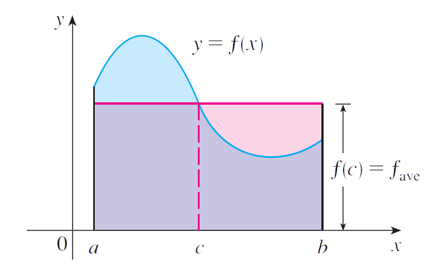

AVERAGE VALUE OF A FUNCTION
Created by Pengxiang Li
2015.9.30
OUTLINES
- Introduction
- Problem Analysis
- Theorem
- Example
Introduction
It is easy to calculate the average value of finitely many numbers \(y_{1}\),\(y_{2}\),...,\(y_{n}\): \[ y_{ave}=\frac{y_{1} + y_{2} + \cdots+y_{n}}{n} \]
But how do we compute the average temperature during a day if infinitely many temperature readings are possible?
Figure1 shows the graph of a temperature function T(t).

Problem Analysis
- IN general,let’s try to compute the average of a function \(y=f(x),a \leq x \leq b\) .We start by dividing the interval [a,b] into n equal subintervals,each with length \(\Delta x = \frac{b-a}{n}\).
- We choose points \(x_{1}^{*},...,x_{n}^{*}\) in successive subintervals and calculate the average of the numbers \(f(x_{1}^{*}),...,f(x_{n}^{*})\) :
\[ \frac{f(x_{1}^{*}) + \cdots + f(x_{n}^{*})}{n} \]
- Since \(\Delta x = \frac{b-a}{n}\),we can get the average value becomes
\[ \frac{f(x_{1}^{*}) + \cdots + f(x_{n}^{*})}{\frac{b-a}{\Delta x}} = \frac{1}{b-a}[f(x_{1}^{*}\Delta x) + \cdots + f(x_{n}^{*}\Delta x)] \] \[= \frac{1}{b-a}\sum_{i=1}^{n}f(x_{i}^{*})\Delta x \]
- If we let n increase,by the definition of a definite integral,the limiting value is:
\[ \lim_{n \to \infty}\frac{1}{b-a}\sum_{i=1}^{n}f(x_{i}^{*})\Delta x = \frac{1}{b-a}\int_{a}^{b}f(x)dx \]
- In general,we define the average value of f on the interval [a,b] as:
\[ f_{ave} = \frac{1}{b-a}\int_{a}^{b}f(x)dx \]
Example 1
- Find the average value of the function \(f(x) = 1 + x^{2}\) on the interval[1,2].
- With a=-1 and b=2 we have \[ f_{ave} = \frac{1}{b-a}\int_{a}^{b}f(x)dx = \frac{1}{2-(-1)}\int_{-1}^{2}(1 + x^{2})dx = \frac{1}{3}[x + \frac{x^{3}}{3}]_{-1}^{2} = 2 \]

THEOREM
- If T(t) is the temperature at time t,we might wonder if there is a specific time when the tempure is the same as the average tempure.
- In other words,is there a number c at which the value of a function f is exactly equal to the average value of the function,that is,\(f(c) = f_{ave}\)?
- THE MEAN VALUE THEOREM FOR INTERALS
- If f is continuous on [a,b],then there exists a number c in [a,b] such that \[ f(c) = f_{ave} = \frac{1}{b-a}\int_{a}^{b}f(x)dx \] \[ \int_{a}^{b}f(x)dx = f(c)(b-a) \]
- The Mean Value Theorem for Integrals is a consequence of the Mean Value Theorem for derivatives and Fundamental Theorem of Calculas
- And how to explain the theorem with images?

Example 2
- Since \(f(x) = 1 + x^{2}\) is continuous on the interval [-1,2],the Mean Value Theorem for Integrals says there is a number c in [-1,2]such that
\[ \int_{-1}^{2}(1 + x^{2})dx = f(c)[2-(-1)] \] \[1 + c^{2} = 2\] \[c^{2} = 1 \]
- So in this case there happen to be two numbers \(c = \pm 1\) in the interval[-1,2] that work in the Mean Value Theorem for Integral.
Example 3
- Show that the average velocity of a car over a time interval \([t_{1},t_{2}]\) is the same as the average of its velocities during the trip.
- If s(t) is the distance of the car at time t,then,by definition,the average velocity of the car over the interval is
\[ \frac{\Delta s}{\Delta t} = \frac{s(t_{2})-s(t_{1})}{t_{2}-t_{1}} \]
- on the other hand,the average value of the velocity function on the interval is: \[ v_{ave} = \frac{1}{t_{2}-t_{1}}\int_{t_{1}}^{t_{2}}v(t)dt = \frac{1}{t_{2}-t_{1}}\int_{t_{1}}^{t_{2}}s'(t)dt\] \[= \frac{1}{t_{2}-t_{1}}[s(t_{2})-s(t_{1})] = \frac{s(t_{2})-s(t_{1})}{t_{2}-t_{1}} = average \ velocity \]